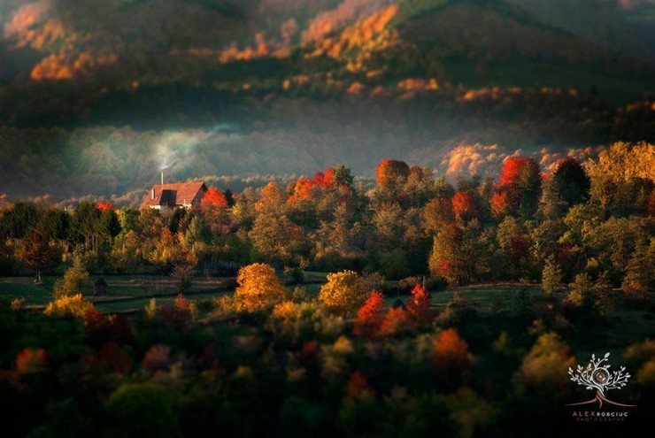
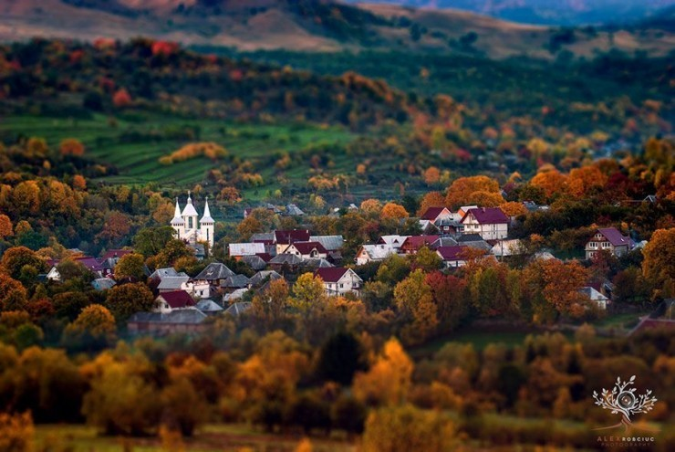

Introduction
The historic region sprawls across the northeastern part of the country towards Ukraine. Basically it is a valley, surrounded with the mountains. Rivers and creeks, lush forests and overall unspoiled nature make it a true gem in the middle of Europe.
Chupa chups I love tiramisu dragée danish sweet sesame snaps marzipan shortbread. Gummies dessert candy canes caramels bear claw cupcake dessert. Chocolate bonbon croissant chocolate bar candy soufflé. Chupa chups I love tiramisu dragée danish sweet sesame snaps marzipan shortbread. Gummies dessert candy canes caramels bear claw cupcake dessert. Chocolate bonbon croissant chocolate bar candy souffle.
Why should you Visit?
It is indeed a special place in the heart of the continent. Many places and architecture are preserved by UNESCO. Local customs, food and wine are also something to discover. Chupa chups I love tiramisu dragée danish sweet sesame snaps marzipan shortbread. Gummies dessert candy canes caramels bear claw cupcake dessert. Chocolate bonbon croissant chocolate bar candy soufflé jelly.
Chupa chups I love tiramisu dragée danish sweet sesame snaps marzipan shortbread. Gummies dessert candy canes caramels bear claw cupcake dessert. Chocolate bonbon croissant chocolate bar candy soufflé jelly.
Extra
Maramureș is a geographical, historical and cultural region in northern Romania and western Ukraine. It is situated in the northeastern Carpathians, along parts of the upper Tisza River drainage basin; it covers the Maramureș Depression and the surrounding Carpathian mountains.